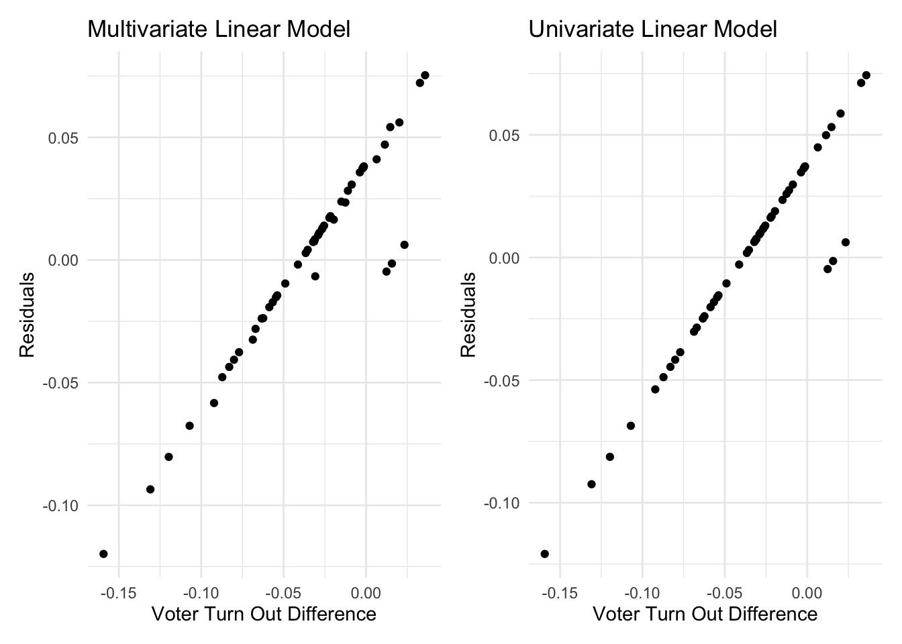
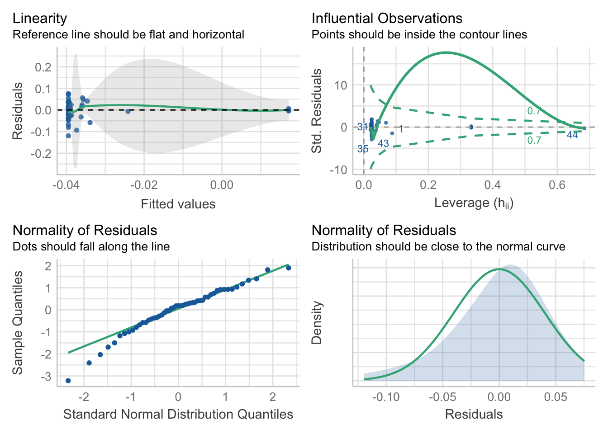

For regression analysis, the merged data set was read and imported
in. A variable, ab_change was created to quantify the
change in abortion restriction status per state (ab_change
= 1 if Roe v. Wade added an abortion restriction that was not previously
in place; ab_change = 0 if the overturning of Roe v. Wade
did not change abortion restrictions). This variable was created by
taking the difference between abortion restriction status in 2022 and
2018.
final_full =
read_csv("data_cleaned/finalprojectfinaldataset.csv") %>%
mutate(
ab_change = abstatus22 - abstatus18
)## Rows: 51 Columns: 19
## ── Column specification ────────────────────────────────────────────────────────
## Delimiter: ","
## chr (2): state, state_abv
## dbl (17): abstatus18, abstatus22, turnout_estimate2022, turnout_estimate2018...
##
## ℹ Use `spec()` to retrieve the full column specification for this data.
## ℹ Specify the column types or set `show_col_types = FALSE` to quiet this message.A regression model was created utilizing the following:
turnout_rate_difference)ab_change)dist_change)regress_turnoutdif_full =
lm(turnout_rate_difference ~ ab_change + dist_change, data = final_full)
summary(regress_turnoutdif_full) %>% broom::tidy() %>% knitr::kable(digits = 2)| term | estimate | std.error | statistic | p.value |
|---|---|---|---|---|
| (Intercept) | -0.04 | 0.01 | -6.15 | 0.00 |
| ab_change | 0.06 | 0.02 | 2.30 | 0.03 |
| dist_change | 0.00 | 0.00 | 0.43 | 0.67 |
confint(regress_turnoutdif_full) %>% knitr::kable(digits = 2)| 2.5 % | 97.5 % | |
|---|---|---|
| (Intercept) | -0.05 | -0.03 |
| ab_change | 0.01 | 0.11 |
| dist_change | 0.00 | 0.00 |
Upon running the model, we find that the change in abortion status has a significant effect on voter turnout (P = 0.0261). On average, a state that had an abortion restriction put in place after the overturning of Roe v. Wade had a 5.661% greater voter turnout in the 2022 election compared to the 2018 election. We are 95% confident that the true increase in voter turnout falls between 0.703% and 10.619%.
The average change in distance to abortion clinic was not significant.
Running an F-test to determine whether the regression model with coefficients is better than an intercept-only model, we get a P-value of 0.08054. This indicates that this model is not significantly better than the intercept-only model.
regress_turnoutdif_onlyab =
lm(turnout_rate_difference ~ ab_change, data = final_full)
summary(regress_turnoutdif_full) %>% broom::tidy() %>% knitr::kable(digits = 2)| term | estimate | std.error | statistic | p.value |
|---|---|---|---|---|
| (Intercept) | -0.04 | 0.01 | -6.15 | 0.00 |
| ab_change | 0.06 | 0.02 | 2.30 | 0.03 |
| dist_change | 0.00 | 0.00 | 0.43 | 0.67 |
confint(regress_turnoutdif_full) %>% knitr::kable(digits = 2)| 2.5 % | 97.5 % | |
|---|---|---|
| (Intercept) | -0.05 | -0.03 |
| ab_change | 0.01 | 0.11 |
| dist_change | 0.00 | 0.00 |
In response to the insignificant F-test, it was decided to remove
dist_change because it was an insignificant predictor. This
leaves a univariate linear regression model, with the change in abortion
restriction and model being significant (P-value = 0.0267). On average,
a state that had an abortion restriction put in place after the
overturning of Roe v. Wade had a 5.559% greater voter turnout in the
2022 election compared to the 2018 election. We are 95% confident that
the true increase in voter turnout falls between 0.669% and 10.449%.
First, we examine the validity of our models for linearity assumption by plotting fitted values against residuals.
turnoutdif_full_plot <-
final_full %>%
modelr::add_residuals(regress_turnoutdif_full) %>%
ggplot(aes(x = turnout_rate_difference, y = resid)) +
geom_point() +
labs(
title = "Multivariate Linear Model",
x = "Voter Turn Out Difference",
y = "Residuals")
turnoutdif_onlyab_plot <-
final_full %>%
modelr::add_residuals(regress_turnoutdif_onlyab) %>%
ggplot(aes(x = turnout_rate_difference, y = resid)) +
geom_point() +
labs(
title = "Univariate Linear Model",
x = "Voter Turn Out Difference",
y = "Residuals")
(turnoutdif_full_plot + turnoutdif_onlyab_plot)
The plots show a strong linear trend with the exception of 4 outliers in the multivariate model and 3 in the univariate model. This confirms that linear regression is most appropriate for our analysis
Next we examine the validity of our models and assess its goodness of fit. Here. we performed this step on the multivariate model only since both models show a linear trend above.
check_model(regress_turnoutdif_full, check = c("linearity", "outliers", "qq", "normality"))
Linearity: As we can see in the top-left chart, the residuals have mean zero and are uncorrelated with the fitted values. Additionally, the best fit line of the residuals regressed on the fitted values has an intercept and slope of zero. This indicte that our model is properly specified.
Homoscedasticity: The top-left chart shows that the residuals are evenly disperesed around the reference line with the exception of one outlier. This indicates that the variance of our residuals should is constant across all fitted values.
Preclusion of Outliers: All of the points in the top-right chart fall within the dashed curves, thus we can conclude that this assumption is satisfied.
Normality: The bottom-left plot for normality shows a linear trend, with the exception of 5 outliers. This confirms our earlier finding of linearity. In addition, the distribution of the residuals As we can see in the top-right chart closely follows a normal distribution centered at zero.